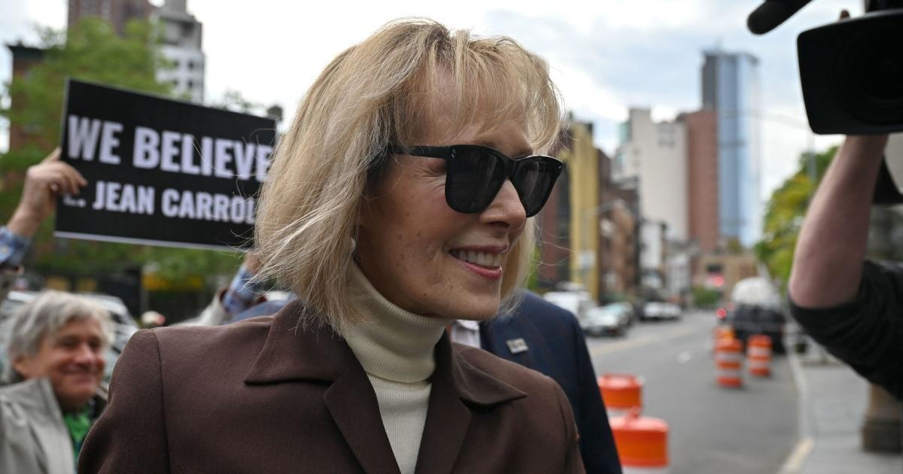

E. Jean Carroll seeks at least $10 million in new damages against Trump after CNN town hallAuthor E. Jean Carroll is seeking at least $10 million in new damages against former President Donald Trump after saying comments he made at a town hall about being were also disparaging. That trial verdict stemmed from the second lawsuit she had filed against Trump. She filed an amended complaint Monday in the first defamation lawsuit, originally filed in 2019, which is still pending. Carroll is asking for "very substantial" damages because of his comments about Carroll during a . Both lawsuits stem from comments Trump made, accusing Carroll of lying, after she came forward in 2019 with allegations that Trump sexually assaulted her in a New York City department store in the mid-1990s. The amended complaint cites the $5 million verdict Carroll won on May 9, when a jury unanimously concluded Trump is liable for sexual abuse and defamation. In Monday's court filing, Carroll's attorney, Roberta Kaplan, argues that Trump, during the Manchester, New Hampshire, town hall, showed he was "undeterred by the jury's verdict" and "persisted in maliciously defaming Carroll yet again." "On the very next day, May 10, 2023, Trump lashed out against Carroll during a televised, primetime 'town hall' event hosted by CNN," Kaplan wrote. "He doubled down on his prior defamatory statements, asserting to an audience all too ready to cheer him on that 'I never met this woman. I never saw this woman,' that he did not sexually assault Carroll, and that her account — which had just been validated by a jury of Trump's peers one day before— was a 'fake,' 'made up story' invented by a 'whack job.'" Trump, who is running for president in 2024, was responding to a question about what he tells voters who say the verdict disqualifies him from the office. Trump attorney Alina Habba said in a statement Monday, "Ms. Carroll's 11th-hour attempt to amend her complaint exposes the true motivation behind her numerous lawsuits." for more features. |
 |